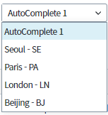
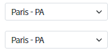
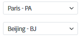
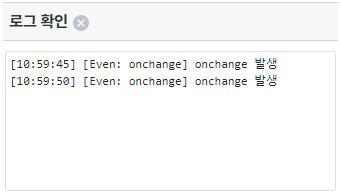
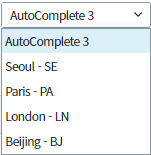
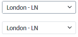
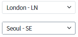
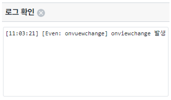
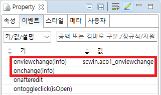
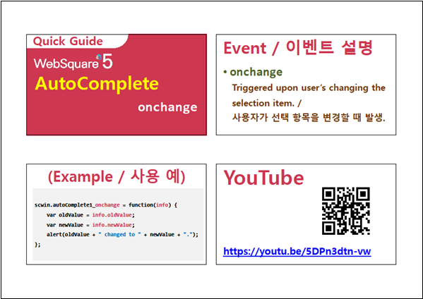

AutoComplete의 onchange와 onviewchange의 동작 차이를 확인하는 예제입니다. onviewchange : 사용자의 화면 조작으로만 발생하는 이벤트 onchange : 사용자의 화면 조작과 script 등 AutoComplete의 값이 변하는 경우 발생하는 이벤트
AutoComplete의 onchange의 동작 확인하기
AutoComplete의 onviewchange의 동작 확인하기
[브라우저(Chrome) 실행 예시]

[브라우저(Chrome) 실행 예시]

[브라우저(Chrome) 실행 예시]

[브라우저(Chrome) 실행 예시]

[브라우저(Chrome) 실행 예시]

[브라우저(Chrome) 실행 예시]

[브라우저(Chrome) 실행 예시]

[브라우저(Chrome) 실행 예시]

onchange - 영역 [Event: onchange]
onviewchange - 영역 [Event: onviewchange]
사용 할 이벤트에 따라 onviewchange, onchange 이벤트 함수를 정의 합니다.
그림 1.웹스퀘어5 SP5 스튜디오의 Property View(이벤트 창) 예시

[필수] onviewchange(info)= scwin.acb_onviewchange_onviewchange //onviewchange 이벤트가 발생할 때 실행할 함수를 지정합니다.
[필수] onchange(info) = scwin.acb_onchange_onchange //onchange 이벤트가 발생할 때 실행할 함수를 지정합니다.
[소스 코드 예시] - 영역 [Event: onviewchange]
/** * 영역 [Event: oncviewhange]의 * Autocomplet [acb_onviewchange]의 onviewchange */ scwin.acb_onviewchange_onviewchange = function(info) { //로그 출력 var strLog = "[Even: onvuewchange] onviewchange 발생"; $c.frame.printExampleLog(strLog, txa_log, false); console.log(strLog); };
<w2:autoComplete ...
ev:onviewchange="scwin.acb_onviewchange_onviewchange">
<!-- 생략 -->
</w2:autoComplete>onviewchange(info)
info.newValue
info.oldValue
onchange(info)
info.newValue
info.oldValue
[웹스퀘어5 SP5 개발 가이드] onchange
링크 : https://docs1.inswave.com/sp5_user_guide/8df43d1f59fab704#5049875f3e493daf
AutoComplete - displayMode & delimiter
링크 : https://youtu.be/5DPn3dtn-vw
